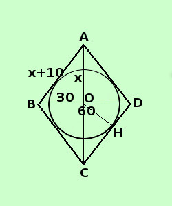

|
sviluppo Risolvere il seguente problema In un rombo, di diagonale minore 60 cm, il lato supera meta' diagonale maggiore di 10 cm; Determinare il raggio del cerchio inscritto nel rombo ipotesi: la figura e' un rombo il rapporto fra le diagonali e' 3/4 tesi: trovare il raggio del cerchio inscritto nel rombo  Per poter risolvere questo problema occorre sapere che Iil raggio del cerchio inscritto nel rombo corrisponde all'altezza rispetto all'ipotenusa di uno dei 4 triangoli rettangoli in cui il rombo e' diviso dalle sue diagonali; Partendo dalla tesi cerchiamo di costruire il procedimento da seguire: Per trovare l'altezza dovro' dividere la doppia area di uno dei triangoli per il lato; l'area di uno dei triangoli e' 1/4 dell'area del rombo per trovare l'area del rombo devo trovare la misura della diagonale maggiore per trovare la diagonale posso prima trovarne la meta' applicando il teorema di Pitagora ad uno dei 4 triangoli in cui il rombo e' diviso dalle sue diagonali Da notare come, partendo dalla tesi, devi procedere un passo per volta, per decidere cosa trovare chiamo x meta' diagonale maggiore meta' diagonale maggiore = AO = x diagonale maggiore = AC = 2x diagonale minore = BD = 60 cm meta' diagonale minore = B0 = 30 cm lato = AB = x + 10 devo trovare la misura di meta' diagonale maggiore; non ho una relazione risolvente ma so che i triangoli in cui il rombo e' diviso dalle diagonali sono rettangoli quindi applico il Teorema di Pitagora al triangolo ABO (ne scelgo uno dei 4) posso esprimerlo come il quadrato del primo cateto piu' il quadrato del secondo cateto e' uguale al quadrato dell'ipotenusa A02 + OC2 = AB2 sostituisco ai segmenti i loro valori in x ed in numeri x2 + 302 = (x + 10)2 sviluppo i quadrati x2 + 900 = x2 + 20x + 100 sposto i termini con la x prima dell'uguale e quelli senza x dopo l'uguale; chi salta l'uguale cambia di segno x2 - x2 - 20x = 100 -900 sommo i termini simili - 20x = - 800 applico il secondo principio per trovare la x
x = 40 sostituisco alla x il suo valore e trovo i dati meta' diagonale maggiore = AO = x = 40cm diagonale maggiore = AC = 2x = 80 cm diagonale minore = BD = 60 cm lato del rombo = AB = 40 + 10 = 50 cm calcolo l'area del rombo
trovo l'area di uno dei 4 triangoli in cui il rombo e' diviso dalle sue diagonali Area del triangolo OCD = 2400 : 4 = 600 cm2 doppia area diviso l'ipotenusa per trovare l'altezza ripetto all'ipotenusa del triangolo (corrisponde al raggio del cerchio inscritto) Raggio del cerchio inscritto = OH = (2·600) : 50 = 1200 : 50 = 24 cm |